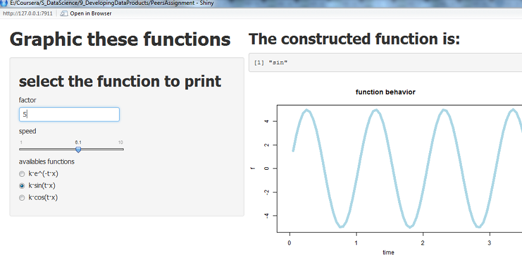
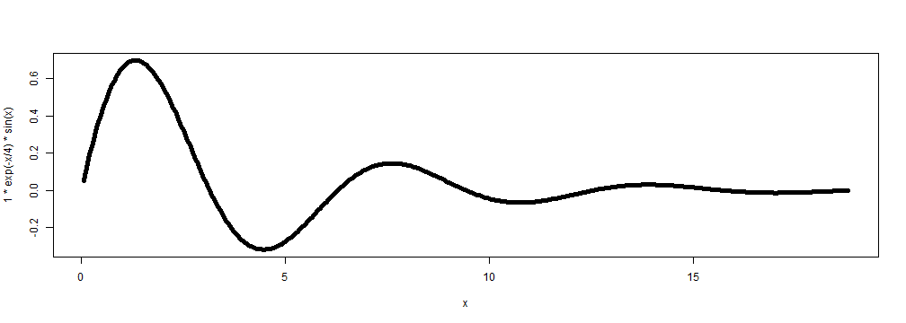

- What is shiny?
- ur.R and server.R files
- Example of use: selecting sin(x)
- Improving the application: Future extension
Juan M. Medel
R student
Shiny is a new way to build web applications with R. #For additional information on the data, please refer to: http://shiny.rstudio.com/
shinyUI(
pageWithSidebar(
headerPanel("Graphic these functions"),
sidebarPanel(h2('select the function to print')) # Add items input
mainPanel(h2('The...'),verbatimTextOutput("funcion"))) #Add items output
shinyServer(function(input, output) {
output$funcion <- renderPrint({input$rb})
output$canvas <- renderPlot({plot(x, y = (input$k)*exp(-x*input$t))})}) #Add plot
The grafical output that should be printed is shown here:

x <- seq(from=0.05, to=6*pi, by=0.05)
plot(x=x, y = 1*exp(-x/4)*sin(x), type ="l", lwd = 5)
